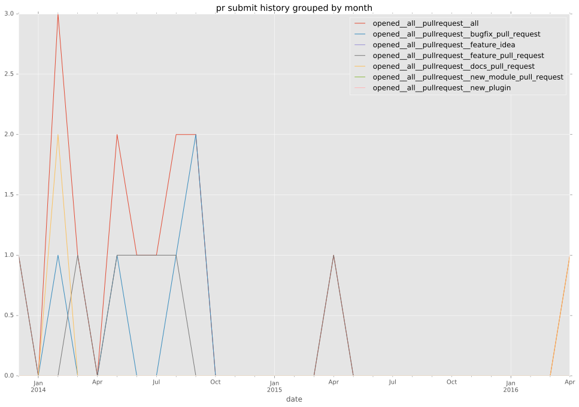

authors
- sivel
maintainers
- sivel
contributors
- bobgroves : 9 commits
- Hypermanzer : 12 commits
- angstwad : 1 commits
- sivel : 88 commits
- jimi-c : 1 commits
total issue counts
feature pull request: 7
pullrequest: 15
docs pull request: 2
bugfix pull request: 6
feature idea: 2
issue: 3
bug report: 1
issue history
pullrequest history


days open by issue type
bugfix pull request
count: 9
std: 0.881917103688
min: 0
max: 2
median: 0.0
mean: 0.555555555556
all
count: 25
std: 89.0568544994
min: 0
max: 325
median: 0.0
mean: 38.96
pullrequest
count: 0
std: nan
min: nan
max: nan
median: nan
mean: nan
docs pull request
count: 3
std: 21.36195996
min: 0
max: 37
median: 0.0
mean: 12.3333333333
feature pull request
count: 11
std: 121.634773736
min: 0
max: 325
median: 47.0
mean: 84.7272727273
feature idea
count: 1
std: nan
min: 0
max: 0
median: 0.0
mean: 0.0
issue
count: 0
std: nan
min: nan
max: nan
median: nan
mean: nan
bug report
count: 1
std: nan
min: 0
max: 0
median: 0.0
mean: 0.0
closures grouped by total days open